Quadratic Functions
Square Root
Definitions
Write the definitions of the following terms in your own words:
square root (Note: a number has two square roots)
principal square root
radical, radical sign, radicand
conjugate radicals
Simplification & Rationalization
Before we talk about simplification, we need to know some properties of radicals: \[\begin{array}{l} \mathrm{i}. \sqrt{a} \cdot \sqrt{b} = \sqrt{ab} \Rightarrow \sqrt{a} \cdot \sqrt{a} = \sqrt{a^2} = a \quad \text{(special case)}\\ \mathrm{ii}. {\displaystyle \frac{\sqrt{a}}{\sqrt{b}} = \sqrt{\frac{a}{b}}}\\ \mathrm{iii}. (a + \sqrt{b}) \cdot (a - \sqrt{b}) = a^2 - b \end{array}\] (Note: For \(\mathrm{iii}\), the left-hand side has radicals, but the right-hand side does not.)
Standards: A square-root expression is simplified if:
no radicand has a perfect-square factor other than 1, and
no radical appears in a denominator
To deal with radicals in denominators, we often use a method called “rationalization," which in practice usually means applying the above properties, especially the third one—the property of conjugate radicals. For example: \[\sqrt{\frac{5}{2}} = \frac{\sqrt{5}}{\sqrt{2}} = \frac{\sqrt{5} \sqrt{2}}{\sqrt{2}\sqrt{2}} = \frac{\sqrt{10}}{2}\] \[\frac{3}{7 + \sqrt{2}} = \frac{3(7 - \sqrt{2})}{(7 + \sqrt{2})(7 - \sqrt{2})} = \frac{21 - 3\sqrt{2}}{49 - 2} = \frac{21 - 3\sqrt{2}}{47}\]
Quadratic Equations in One Variable
The Simplest Case
Based on our previous knowledge of square roots, we can immediately solve the simplest type of quadratic equation: \[x^2 = c \Rightarrow x = \sqrt{c}\ \text{or}\ x = -\sqrt{c}\] Actually, we can also solve equations of the form \(ax^2 = b\) or even \(ax^2 + b = c\). (Why?) Well, let’s not keep it a mystery: in fact, we can even solve equations of the form \(a(x-h)^2+k=0\). For example: \[\begin{array}{c} 5(x+7)^2 - 16 = 0\\ 5(x+7)^2 = 16\\ (x+7)^2 = \frac{16}{5}\\ \Rightarrow (x+7) = \sqrt{\frac{16}{5}} = \frac{4\sqrt{5}}{5} \ \text{or}\ (x+7) = -\frac{4\sqrt{5}}{5}\\ \Rightarrow x = -7 + \frac{4\sqrt{5}}{5} \ \text{or}\ x = -7 - \frac{4\sqrt{5}}{5} \end{array}\]
The General Case
So what about the general quadratic equation \(ax^2 + bx + c = 0\)? The method which can help us is called Completing the Square.
Completing the Square
First, recall a fundamental identity—commonly called the perfect square trinomial: \[\begin{equation*} (a + b)^2 = a^2 + 2ab + b^2 \end{equation*}\]
Now let’s proceed step by step, with every reason made clear: \[\begin{gather*} \label{F:CQ} ax^2 + bx + c = 0\\ a(x^2 + \frac{b}{a} x) + c = 0\quad \text{(factor out \(a\) from the first two terms)} \tag{1}\\ a(x^2 + 2\frac{b}{2a} x) + c = 0\quad (2\frac{b}{2a}x = \frac{b}{a} x) \tag{2}\\ a(x^2 + 2\frac{b}{2a} x {\color{red}+ \left( \frac{b}{2a} \right)^2 - \left( \frac{b}{2a} \right)^2}) + c = 0 \quad \text{(add and subtract the same term)} \tag{3}\\ a(x^2 + 2\frac{b}{2a} x + \left( \frac{b}{2a} \right)^2) - a\cdot\left( \frac{b}{2a} \right)^2 + c = 0 \quad \text{(separate the subtracted term)} \tag{4}\\ a(x {\color{red} + \frac{b}{2a}})^2 {\color{blue}- a\cdot\left( \frac{b}{2a} \right)^2 + c} = 0 \quad \text{(use the perfect square trinomial)} \tag{5} \end{gather*}\] Notice that if we treat \(\displaystyle +\frac{b}{2a}, - a\cdot\left( \frac{b}{2a} \right)^2 + c\) in \((5)\) above as \(-h, k\), we have in fact achieved our goal: we have transformed \(ax^2 + bx + c = 0\) into \(a(x-h)^2+k=0\).
The key lies in step (3): algebraically, we just added and subtracted the same term, but why exactly \(\displaystyle \left( \frac{b}{2a} \right)^2\)? Because of our goal. We want to transformed \(ax^2 + bx + c = 0\) into the form \(a(x-h)^2+k=0\). For that, we need a perfect square trinomial, and adding this term makes the first three terms exactly that.
The reason for step (2) is similar: a perfect square trinomial has a \(2ab\) term, so we “forced” a 2 into the coefficient.
Why does adding \(\displaystyle \left( \frac{b}{2a} \right)^2\) make the first three terms a perfect square trinomial? Observe: \[\begin{matrix} a^2 &+ 2ab &+ b^2 & = & (a+b)^2 \\ \Downarrow &\Downarrow &\Downarrow & &\Downarrow\\ x^2 &+ 2\left(\tfrac{b}{2a}\right)x &+ \left(\tfrac{b}{2a}\right)^2 & = & \left(x + \tfrac{b}{2a}\right)^2 \end{matrix}\]
Quadratic Formula and Discriminant
The previous section is extremely important, and I strongly encourage you to understand it thoroughly.
Now let’s move forward. Returning to the result we obtained, specifically equation \((5)\) above: \[\begin{gather*} a(x + \frac{b}{2a})^2 - a\cdot\left( \frac{b}{2a} \right)^2 + c = 0\\ a(x + \frac{b}{2a})^2 - \frac{b^2}{4a} + c = 0 \quad \text{(simplify)}\\ a(x + \frac{b}{2a})^2 - \frac{b^2}{4a} + \frac{4ac}{4a} \quad (c = \frac{4ac}{4a})\\ a(x + \frac{b}{2a})^2 - \frac{b^2 - 4ac}{4a} = 0 \quad \text{(simplify)}\\ a(x + \frac{b}{2a})^2 = \frac{b^2 - 4ac}{4a}\\ (x + \frac{b}{2a})^2 = \frac{b^2 - 4ac}{4a^2} \tag{6} \end{gather*}\] Now we are back to a form we completely understand, so we can write: \[(x + \frac{b}{2a}) = \sqrt{\frac{b^2 - 4ac}{4a^2}} = \frac{\sqrt{b^2 - 4ac}}{2a} \ \text{or}\ (x + \frac{b}{2a}) = - \frac{\sqrt{b^2 - 4ac}}{2a}\] Which leads to: \[\begin{equation} \label{F:QF} x = - \frac{b}{2a} + \frac{\sqrt{b^2 - 4ac}}{2a} = \frac{-b + \sqrt{b^2 - 4ac}}{2a} \ \text{or}\ x = \frac{-b - \sqrt{b^2 - 4ac}}{2a} \tag{7} \end{equation}\]
This is the Quadratic Formula. You can now solve all quadratic equations.
But, wait a second.
First, in the step \(\displaystyle \sqrt{\frac{b^2 - 4ac}{4a^2}} = \frac{\sqrt{b^2 - 4ac}}{2a}\), we “carelessly” used \(\sqrt{4a^2} = 2a\). But this is not always correct, because if \(a < 0\), then \(\sqrt{4a^2} = -2a\). (Why?1). Fortunately, this is not a real problem, since substituting back and simplifying gives the same final formula anyway.
The second problem is more critical. In equation \((6)\), what if \(\displaystyle \frac{b^2 - 4ac}{4a^2} <0\)? Or to ask a simpler question: what about the equation \(x^2 = -3\)? No real number squared is negative. So the equation has no real solutions. Likewise, if \(\displaystyle \frac{b^2 - 4ac}{4a^2} <0\), equation \((6)\) has no real solution. Notice that \(4a^2 > 0\), so the sign of the fraction is determined only by the numerator. This leads to the following conclusions:
If \(b^2 - 4ac > 0\), the equation has two distinct real solutions.
If \(b^2 - 4ac = 0\), the equation has one real solution (similar to \(x^2=0\), which has only the root \(x=0\)).
If \(b^2 - 4ac < 0\), the equation has no real solutions.
Because the sign of \(b^2 - 4ac\) allows us to determine whether a quadratic equation has real solutions, and if so, how many, we call this expression the discriminant, usually denoted by \(\Delta\) (\(\Delta\) is a Greek letter, we read it as delta, you may have already encounter \(\delta\) and be confused why it also read as delta. Well, \(\Delta\) is the capital one, and \(\delta\) is the lowercase one, just like A and a): \[\begin{equation*} \Delta = b^2 - 4ac \tag{8} \end{equation*}\]
Factoring
In the previous formula \((7)\), we already have a way to solve any quadratic equation. However, it looks a bit complicated. Is there a simpler approach? Yes — it is called factoring.
Factoring works because of the Zero-Product Property: \[\begin{equation*} AB = 0 \quad \Rightarrow \quad A = 0 \ \text{or}\ B = 0. \end{equation*}\] In words: if the product of two2 expressions (say \(A\) and \(B\)) is zero, then at least one of them must be zero. Example: \[(x-2)(x+5) = 0 \quad \Rightarrow \quad x-2=0 \ \text{or}\ x+5=0.\] So \[x-2=0 \Rightarrow x=2, \quad\text{or}\quad x+5=0 \Rightarrow x=-5.\] Notice that \((x-2)(x+5) = 0\) is exactly the same equation as \(x^2 + 3x -10 = 0\). By solving one, we have solved the other. The real challenge is to recognize that \(x^2 + 3x -10\) can be written as \((x-2)(x+5)\). That is the point of factoring.
Some Special Patterns
There are some common algebraic identities that make factoring easier. Two of the most important are: \[\begin{align*} a^2 - b^2 &= (a+b)(a-b) &\text{(Difference of Squares)}\\ a^2 \pm 2ab + b^2 &= (a \pm b)^2 &\text{(Perfect Square Trinomial)} \end{align*}\] Examples: \[\begin{gather*} q^2 - 100 = q^2 - (10)^2 = (q+10)(q-10)\\ x^2 - 26x +169 = x^2 - 2\cdot x\cdot 13 + 13^2 = (x-13)^2 \end{gather*}\]
Be flexible when applying these patterns. For instance: \[\begin{gather*} s^6 - t^4 = (s^3)^2 - (t^2)^2 = (s^3+t^2)(s^3-t^2)\\ w^6 + 34w^3 + 289 = (w^3)^2 + 2\cdot w^3\cdot 17 + 17^2 = (w^3+17)^2 \end{gather*}\]
Factor Trinomials
Now let’s think in reverse: we want to write \(ax^2+bx+c = 0\) as the product of two linear factors: \[\begin{equation*} ax^2+bx+c = (kx+m)(lx+n). \tag{9} \end{equation*}\] Expanding gives \[\begin{equation*} (kx+m)(lx+n) = klx^2 + (kn+lm)x + mn. \tag{10} \end{equation*}\] So what we really need is \[\begin{equation*} ax^2+bx+c = klx^2 + (kn+lm)x + mn. \tag{11} \end{equation*}\]
Equation \((11)\) tells us we need to find four numbers \(k,l,m,n\) such that:
\(k\cdot l = a\)
\(m\cdot n = c\)
\(k\cdot n + l\cdot m = b\)
In this way, \(ax^2 + bx + c = 0\) can be seen as \(kl x^2 + (kn + lm) x + mn = 0\). And according to equation \((10)\), \(kl x^2 + (kn + lm) x + mn = 0\) can be written as \((k x + m)(l x + n) = 0\). Thus we achieve what we wanted in equation \((9)\), i.e. factorization.
The following diagram illustrates the idea:
 

Examples: \[x^2+4x-12=0, \quad k=l=1,\, m=6,\, n=-2 \quad \Rightarrow \quad (x+6)(x-2).\] \[5x^2-17x+6=0, \quad k=1,\, l=5,\, m=-3,\, n=-2 \quad \Rightarrow \quad (x-3)(5x-2).\] In both examples, the search for \(k,l,m,n\) may involve some trial and error. For instance, in the first problem, \(4\cdot(-3)=-12\) too, but that choice does not give the correct middle term. The key is to practice enough so the right combinations become easier to spot.
Another example: \[6x^2-14x+8=0, \quad k=2,\, l=3,\, m=-2,\, n=-4 \quad \Rightarrow \quad (2x-2)(3x-4).\] Here it is possible, but a cleaner path is to first factor out the common factor: \[6x^2-14x+8 = 2(3x^2-7x+4)=0,\] and then factorize \(3x^2-7x+4\).
Finally, consider: \[x^2+3x-12=0.\] It looks impossible to factor with integers, right? But we can still write \[k=l=1, \quad m=\frac{3-\sqrt{57}}{2}, \quad n=\frac{3+\sqrt{57}}{2}.\] Indeed, \[\begin{align*} mn &= \frac{3-\sqrt{57}}{2}\cdot \frac{3+\sqrt{57}}{2}\\ &= \frac{9-(\sqrt{57})^2}{4}\\ &= \frac{-48}{4}=-12. \end{align*}\] And you can check \(kn+lm=b\) with \(b=3\). Thus \[x^2+3x-12=\left(x+\frac{3-\sqrt{57}}{2}\right)\left(x+\frac{3+\sqrt{57}}{2}\right).\]
Why does this work? Because the ultimate goal of factoring is to find the solutions. And we already know the quadratic formula, which gives the roots directly. Once you have the two solutions, you can always write the factors from them. That is, if \[x=\frac{-3+\sqrt{57}}{2},\] then the factor is \[\left(x+\frac{3-\sqrt{57}}{2}\right).\]
This final example shows the big picture: some quadratics are easy to factor by inspection, some are not. In either case, the quadratic formula is always available. Most importantly, factoring and the quadratic formula are deeply connected.
Quadratic Functions
The previous material was quite a lot, and some parts may take effort to digest. But rest assured—none of it will go to waste.
Three Forms and Their Conversions
Now we move from quadratic equations to quadratic functions. A quadratic function can be written in three equivalent forms: \[\begin{align*} &y = f(x) = ax^2 + bx + c, &(\text{general form})\\ &y = f(x) = a(x-h)^2 + k, &(\text{vertex form})\\ &y = f(x) = a(x-p)(x-q), &(\text{intercept form}) \end{align*}\] Don’t mistake these for different functions—they are simply three different “ways of writing’’ the same quadratic. They can be converted from one form to another. We will first explain how these conversions work, and then the more important question: why bother learning all three forms.
When I’m writing this, it’s autumn. Autumn is the season of harvest—at least for farmers. But if you have carefully understood the earlier content, then from this point on, for you too, it’s a season of harvest.
First: How do we convert the general form into the vertex form? By completing the square. We’ve already learned the method, so let’s just see an example: \[\begin{align*} y &= 2x^2 - 16x - 18\\ &= 2(x^2 - 8x) - 18\\ &= 2(x^2 - 2\cdot 4\cdot x + 4^2 - 4^2) -18\\ &= 2(x^2 - 2\cdot 4\cdot x + 4^2) - 2 \cdot 4^2 - 18\\ &= 2(x - 4)^2 - 40 \end{align*}\]
Next: How do we convert the general form into the intercept form? By factoring3. Again, an example is enough: \[\begin{gather*} y = 2x^2 - 16x - 18 = 2 (x^2 - 8x -9)\\ \text{For } x^2 - 8x -9,\ k = l = 1,\ m = -9,\ n = 1\\ \Rightarrow y = 2(x-9)(x+1) \end{gather*}\]
Converting from vertex form or intercept form back to the general form? Just expand with basic algebra. Converting between vertex form and intercept form? Use the general form as a bridge: expand one, then refactor into the other.
The Meaning of the Three Forms
First, the general form. It doesn’t carry as much direct geometric meaning as the other two, but one thing it gives right away is the \(y\)-intercept: it is simply \(c\), because \[f(0) = a\cdot (0)^2 + b\cdot (0) + c = c.\]
Next, the vertex form. As the name suggests, its greatest advantage is that it directly shows the coordinates of the vertex, \((h,k)\). For \[y = f(x) = a(x-h)^2 + k,\] we can immediately see:
If \(a > 0\), then at \(x=h\) the function takes its minimum value (because for any other \(x\), the term \(a(x-h)^2\) is positive, making the output larger than \(k\)). Geometrically, the vertex is the lowest point.
If \(a < 0\), then at \(x=h\) the function takes its maximum value. Geometrically, the vertex is the highest point. The reasoning is similar.
This also shows the meaning of parameter \(a\): it determines the direction of the parabola’s opening. If \(a>0\), it opens upward; if \(a<0\), it opens downward.
Furthermore, the vertex form makes symmetry clear: a quadratic function is always symmetric. Its axis of symmetry is \[\begin{equation*} x = h \tag{12} \end{equation*}\] For a number less than \(h\), say \(h-t\), we compute \[f(h-t) = a[(h-t)-h]^2 + k = at^2 + k.\] And for the point symmetric to it across \(x=h\), namely \(h+t\), \[f(h+t) = a[(h+t)-h]^2 + k = at^2 + k.\]
Now, recall the section on completing the square: what is \(h\) in that context? This leads us to the axis of symmetry in the general form: \[\begin{equation*} x = -\frac{b}{2a} \tag{13} \end{equation*}\]
Finally, the intercept form. From it we can directly read off the \(x\)-intercepts: \((p,0)\) and \((q,0)\). Why? \[f(p) = a(p-p)(p-q) = 0,\quad f(q) = a(q-p)(q-q) = 0.\] So the \(x\)-coordinates of the intercepts are exactly the real solutions of the corresponding quadratic equation. These intercepts are often called the zeros of the function. In other words: the zeros of a quadratic function are the solutions of its quadratic equation.
But we already noted earlier: not every quadratic equation has real solutions (for example, \(x^2=-3\)). The corresponding quadratic function has no real \(x\)-intercepts, and thus cannot be written in intercept form. So: not every quadratic function has an intercept form. How can we tell from the general form whether it does? By checking the discriminant \(\Delta\). Combining with the sign of \(a\), we have:
If \(a>0\) and \(\Delta<0\), the parabola lies entirely above the \(x\)-axis.
If \(a<0\) and \(\Delta<0\), the parabola lies entirely below the \(x\)-axis.
By symmetry, we can immediately state the axis of symmetry in the intercept form4: \[\begin{equation*} x = \frac{p+q}{2} \tag{14} \end{equation*}\]
That’s it, kid. The season of harvest, remember? Ah, one last remark: the graph of a quadratic function is a parabola. But what exactly is a parabola, and why must quadratics produce parabolas? That’s a story for another day, when we study conic sections.
二次函数
平方根
定义
用你自己的话写出下面的术语的定义:
平方根（注意：一个数有两个平方根）
主平方根
根式、根号、被开方数
共轭根式
化简与有理化
在谈论化简之前，我们需要知道一些根式的性质: \[\begin{array}{l} \mathrm{i}. \sqrt{a} \cdot \sqrt{b} = \sqrt{ab} \Rightarrow \sqrt{a} \cdot \sqrt{a} = \sqrt{a^2} = a \quad \text{(特殊情形)}\\ \mathrm{ii}. {\displaystyle \frac{\sqrt{a}}{\sqrt{b}} = \sqrt{\frac{a}{b}}}\\ \mathrm{iii}. (a + \sqrt{b}) \cdot (a - \sqrt{b}) = a^2 - b \end{array}\] (注意： 对于\(\mathrm{iii}\), 左边有根式，但右边就没有了.)
化简的判定标准： 一个平方根式被认为“已化简"，当且仅当：
被开方数没有除\(1\)以外的完全平方因子，且
分母中不含有根式
为了处理分母中的根式，常常使用一种称为“有理化”的方法。 实际上就是利用上述性质， 特别是第三条——共轭根式的性质。举例说明： \[\sqrt{\frac{5}{2}} = \frac{\sqrt{5}}{\sqrt{2}} = \frac{\sqrt{5} \sqrt{2}}{\sqrt{2}\sqrt{2}} = \frac{\sqrt{10}}{2}\] \[\frac{3}{7 + \sqrt{2}} = \frac{3(7 - \sqrt{2})}{(7 + \sqrt{2})(7 - \sqrt{2})} = \frac{21 - 3\sqrt{2}}{49 - 2} = \frac{21 - 3\sqrt{2}}{47}\]
一元二次方程
最简单情形
基于上面的有关平方根的知识, 马上就能解出最简单的一类一元二次方程: \[x^2 = c \Rightarrow x = \sqrt{c}\ \text{or}\ x = -\sqrt{c}\] 我们其实也能解形如\(ax^2 = b\)甚至\(ax^2 + b = c\)的方程了. (为什么?). 算了, 不逗你们了, 其实我们连\(a(x-h)^2+k=0\)这样的方程都能解了. 举例说明: \[\begin{array}{c} 5(x+7)^2 - 16 = 0\\ 5(x+7)^2 = 16\\ (x+7)^2 = \frac{16}{5}\\ \Rightarrow (x+7) = \sqrt{\frac{16}{5}} = \frac{4\sqrt{5}}{5} \ \text{or}\ (x+7) = -\frac{4\sqrt{5}}{5}\\ \Rightarrow x = -7 + \frac{4\sqrt{5}}{5} \ \text{or}\ x = -7 - \frac{4\sqrt{5}}{5} \end{array}\]
一般情形
那么, 对于一般的\(ax^2 + bx + c = 0\)怎么办呢? 要用的方法, 叫做配方法.
配方法
首先, 要知道一个基础的公式-它一般被称为完全平方式: \[\begin{equation*} (a + b)^2 = a^2 + 2ab + b^2 \end{equation*}\] 接下来的每一步, 希望大家都清楚的知道原因: \[\begin{gather*} ax^2 + bx + c = 0\notag\\ a(x^2 + \frac{b}{a} x) + c = 0\quad \text{(对前两项提取公因式)} \tag{1}\\ a(x^2 + 2\frac{b}{2a} x) + c = 0\quad (2\frac{b}{2a}x = \frac{b}{a} x) \tag{2}\\ a(x^2 + 2\frac{b}{2a} x {\color{red}+ \left( \frac{b}{2a} \right)^2 - \left( \frac{b}{2a} \right)^2}) + c = 0 \quad \text{(加一项, 再减掉)} \tag{3}\\ a(x^2 + 2\frac{b}{2a} x + \left( \frac{b}{2a} \right)^2) - a\cdot\left( \frac{b}{2a} \right)^2 + c = 0 \quad \text{(把减掉那项拿出来)} \tag{4}\\ a(x {\color{red} + \frac{b}{2a}})^2 {\color{blue}- a\cdot\left( \frac{b}{2a} \right)^2 + c} = 0 \quad \text{(使用上面的完全平方式)} \tag{5} \end{gather*}\] 到这里, 只要你把\((5)\)中的\(\displaystyle +\frac{b}{2a}, - a\cdot\left( \frac{b}{2a} \right)^2 + c\) 分别看成\(-h, k\), 我们就把\(ax^2 + bx + c = 0\)转化成了\(a(x-h)^2+k=0\).
配方法的关键在于上面的\((3)\)这一步, 从代数上讲, 我们只是加一项然后减一项, 但问题是, 为什么要加\(\displaystyle \left( \frac{b}{2a} \right)^2\)这样一项?
因为我们的目标. 我们的目标是把\(ax^2 + bx + c = 0\)转化成\(a(x-h)^2+k=0\), 我们需要得到一个平方式, 而添加这一项之后, 它与前面两项组合起来确实就是一个完全平方式. 其实第\((2)\)步的原因也是一样的. 完全平方式里面有\(2ab\)这样一项, 我们需要一个\(2\), 所以我们“强行"凑了一个2.
至于为什么添加\(\displaystyle \left( \frac{b}{2a} \right)^2\)这样一项后, 前三项刚好就是一个完全平方式呢? 请看 \[\begin{matrix} a^2 &+ 2ab &+ b^2 & = & (a+b)^2 \\ \Downarrow &\Downarrow &\Downarrow & &\Downarrow\\ x^2 &+ 2\left(\tfrac{b}{2a}\right)x &+ \left(\tfrac{b}{2a}\right)^2 & = & \left(x + \tfrac{b}{2a}\right)^2 \end{matrix}\]
求根公式, 判别式
上一部分真的非常重要, 请读者一定要彻底的理解透彻.
当然, 我们这里继续前行, 让我们回到我们得到的结果, 特别是上一小节的第\((5)\)个式子. \[\begin{gather*} a(x + \frac{b}{2a})^2 - a\cdot\left( \frac{b}{2a} \right)^2 + c = 0\\ a(x + \frac{b}{2a})^2 - \frac{b^2}{4a} + c = 0 \quad \text{(化简)}\\ a(x + \frac{b}{2a})^2 - \frac{b^2}{4a} + \frac{4ac}{4a} \quad (c = \frac{4ac}{4a})\\ a(x + \frac{b}{2a})^2 - \frac{b^2 - 4ac}{4a} = 0 \quad \text{(化简)}\\ a(x + \frac{b}{2a})^2 = \frac{b^2 - 4ac}{4a}\\ (x + \frac{b}{2a})^2 = \frac{b^2 - 4ac}{4a^2} \tag{6} \end{gather*}\] 到最后一步, 就是我们已经完全知道怎么解的一元二次方程的形式了, 所以我们就能得出 \[(x + \frac{b}{2a}) = \sqrt{\frac{b^2 - 4ac}{4a^2}} = \frac{\sqrt{b^2 - 4ac}}{2a} \ \text{或}\ (x + \frac{b}{2a}) = - \frac{\sqrt{b^2 - 4ac}}{2a}\] 再进一步: \[\begin{equation*} x = - \frac{b}{2a} + \frac{\sqrt{b^2 - 4ac}}{2a} = \frac{-b + \sqrt{b^2 - 4ac}}{2a} \ \text{或}\ x = \frac{-b - \sqrt{b^2 - 4ac}}{2a} \tag{7} \end{equation*}\]
上面就是一元二次函数的求根公式了, 现在, 所有的一元二次方程, 你都能求解了.
但是, 有问题.
第一个问题, 在前面的\(\displaystyle \sqrt{\frac{b^2 - 4ac}{4a^2}} = \frac{\sqrt{b^2 - 4ac}}{2a}\)中, 我们“草率地"用了\(\sqrt{4a^2} = 2a\), 然而这是不对的. 因为如果\(a < 0\), 应该是\(\sqrt{4a^2} = -2a\) (为什么?1). 但这不是大问题, 因为, 你代入这个结果, 再化简一次, 最后的公式是一样的.
第二个问题才是关键. 对于公式\((6)\), 如果\(\displaystyle \frac{b^2 - 4ac}{4a^2} <0\) 怎么办? 或者我们先换个简单的问题: 对于方程\(x^2 = -3\)怎么办? 没有实数的平方是负数. 所以这个方程没有实数解. 同样地, 如果\(\displaystyle \frac{b^2 - 4ac}{4a^2} <0\), 那\((6)\)也没有实数解. 这里, 请注意, \(4a^2\)一定是一个正数, 所以整个分式的符号仅由分子决定, 我们可以得到下面的结论:
如果\(b^2 - 4ac > 0\), 那之后的步骤可以进行下去, 方程有实数解, 而且有两个
如果\(b^2 - 4ac = 0\), 之后的步骤也可以进行下去, 只不过, 就像\(x^2 = 0\), 他只有一个解-\(x=0\), 这种情形下, 方程最后也只有一个实数解
如果\(b^2 - 4ac < 0\), 之后的步骤无法进行, 方程没有实数解
因为\(b^2 - 4ac\)的符号, 可以让我们判别一元二次方程是否有实数解, 有的话又有几个, 所以, 我们将其称为判别式, 并常常记作\(\Delta\)(这是个希腊字母, 读作Delta-德尔塔2), 也就是: \[\begin{equation*} \Delta = b^2 - 4ac \tag{8} \end{equation*}\]
因式分解
前面的公式\((7)\), 其实已经可以帮助我们解出一切一元二次方程. 但是, 不得不说, 它有点复杂. 那么我们有没有更简单的方法呢? 有, 叫因式分解3.
因式分解能够帮助我们解出方程的原理是“零乘积性质": \[\begin{equation*} AB = 0 \Rightarrow A = 0\ \text{or}\ B = 0 \end{equation*}\] 如果两个4表达式(比如上面的\(A, B\))的乘积是\(0\), 那么它们中的一个或者两个都为\(0\). 举个例子: \[(x-2)(x+5) = 0 \Rightarrow (x-2) = 0 \ \text{or}\ (x+5) = 0.\] 基于此, 有 \[(x-2) = 0 \Rightarrow x = 2 \ \text{or}\ (x+5) = 0 \Rightarrow x = -5.\] 注意到, \((x-2)(x+5) = 0\)就是\(x^2 + 3x -10 = 0\), 上面, 其实我们找到了\((x-2)(x+5) = 0\)的解, 其实也就是找到了\(x^2 + 3x -10 = 0\)的解. 问题在于, 怎么发现\(x^2 + 3x -10 = 0\)可以被写成\((x-2)(x+5) = 0\). 这正是因式分解的目的.
一些特殊公式
可以利用一些基本的公式来进行因式分解, 这里我们介绍两个: \[\begin{align*} &a^2 - b^2 = (a + b)(a - b) &\text{(平方差公式)}\\ &a^2 \pm 2ab + b^2 = (a \pm b)^2 &\text{(完全平方式)} \end{align*}\] 举例: \[\begin{gather*} q^2 - 100 = q^2 - (10)^2 = (q + 10)(q - 10)\\ x^2 - 26x +169 = x^2 - 2\cdot x\cdot 13 + 13^2 = (x-13)^2 \end{gather*}\]
这里, 注意应用这些公式的时候要灵活, 举例: \[\begin{gather*} s^6 - t^4 = (s^3)^2 - (t^2)^2 = (s^3 + t^2)(s^3 - t^2)\\ w^6 + 34w^3 + 289 = (w^3)^2 + 2 \cdot w^3 \cdot 17 + 17^2 = (w^3 + 17)^2 \end{gather*}\]
十字相乘法
逆向的思考我们想要做的事: 我们想把\(ax^2 + bx + c = 0\)写成两个因式相乘的样子, 即 \[\begin{equation*} a x^2 + b x + c = (k x + m)(l x + n) \tag{9} \end{equation*}\] 注意: \[\begin{equation*} (k x + m)(l x + n) = kl x^2 + (kn + lm) x + mn \tag{10} \end{equation*}\] 所以, 其实我们需要的是: \[\begin{equation*} a x^2 + b x + c = kl x^2 + (kn + lm) x + mn \tag{11} \end{equation*}\]
式\((11)\)是什么意思? 注意: 我们需要找到四个数-\(k, l, m, n\)他们满足:
\(k\times l = a\)
\(m\times n = c\)
\(k\times n + l\times m = b\)
如此, \(ax^2 + bx + c = 0\)就能被看成\(kl x^2 + (kn + lm) x + mn = 0\). 又根据式\((10)\), \(kl x^2 + (kn + lm) x + mn = 0\)可以被写成\((k x + m)(l x + n) = 0\), 于是我们就能做到式\((9)\)中的事, 也即完成了因式分解.
下面的示意图或许可以帮助理解:
举几个例子: \[x^2 + 4x -12 = 0, k=l=1, m=6, n=-2 \Rightarrow x^2 + 4x -12 = (x+6)(x-2)\] \[5x^2 -17x +6 = 0, k = 1, l = 5, m = -3, n = -2 \Rightarrow 5x^2 -17x +6 = (x-3)(5x-2)\] 两个例子中, 应该都可以注意到, 寻找\(k, l, m, n\)的过程可能伴随着试错. 以第一个例子为例, \(4\times (-3)\)也等于\(-12\), 那为什么不让\(m=4, n=-3\)? 因为它不满足\(k\times n + l\times m = b\).那么我们又怎么高效地找到这四个数呢? 实话实说, 多做点题.
再举一个例子: \[6x^2 -14x + 8 = 0, k = 2, l = 3, m = -2, n = -4 \Rightarrow 6x^2 -14x + 8 = (2x-2)(3x-4)\] 我们可以寻找到这四个数字, 但对这个例子, 如果我们一开始把它改写成 \[6x^2 -14x + 8 = 2(3x^2 - 7x +4)=0\] 然后对\(3x^2 - 7x +4=0\)进行因式分解, 或许要简单点.
我们举最后一个例子来结束这一部分: 如何因式分解\(x^2 + 3x -12 = 0\)? 做不到吧, 小鬼? 其实能: \[k = l = 1, m = \frac{3 - \sqrt{57}}{2}, n = \frac{3 + \sqrt{57}}{2}\] 注意到 \[\begin{align*} mn &= \frac{3 - \sqrt{57}}{2} \cdot \frac{3 + \sqrt{57}}{2}\\ &= \frac{(3 - \sqrt{57})\cdot(3 + \sqrt{57})}{2\cdot 2}\\ &= \frac{3^2 - (\sqrt{57})^2}{4}\\ &= \frac{9 - 57}{4} = \frac{-48}{4}\\ &= -12 \end{align*}\] 至于\(k\times n + l\times m = b\) (在这里, \(b=3\))你可以自己算一下. 因此 \[x^2 + 3x -12 = \left(x + \frac{3 - \sqrt{57}}{2}\right)\left(x + \frac{3 + \sqrt{57}}{2}\right)\] 为什么呢? 为什么我能找到呢? 原因在于, 因式分解的最终目的, 就是寻找方程的解, 而对于方程的解, 我们不是早早的就有了求根公式吗? 利用求根公式, 就能求出这个方程的两个解, 然后你再把对应的因式写出来就好了, 我的意思是: \[x = \frac{-3 + \sqrt{57}}{2} \Leftrightarrow \left(x + \frac{3 - \sqrt{57}}{2}\right)\]
为什么举这个例子作为这一部分的结束, 因为我们可以看到, 有些一元二次方程, 利用因式分解很容易解出来, 有些则不然 (比如刚刚的例子), 所以我们也要记得求根公式. 最重要的, 我们还要看到他们之间的关系.
一元二次函数
前面的内容很多, 有些理解起来可能还要花点功夫, 但是, 他们不会白费的.
三种形式及其转化
现在我们从一元二次方程转向一元二次函数. 首先一元二次函数有三种形式: \[\begin{align*} &y = f(x) = ax^2 + bx + c, &(\text{一般式})\\ &y = f(x) = a(x-h)^2 + k, &(\text{顶点式})\\ &y = f(x) = a(x-p)(x-q), &(\text{两点式}) \end{align*}\] 不要误以为三种形式是不同的函数, 这里, 是同一个二次函数可以有三种“写法", 并且三种“写法"之间可以相互转化. 我们先解释三种形式之间如何相互转化, 再解释更重要的-为什么要学三种形式.
我写这篇文章的时候, 已经是秋天, 秋天是收获的季节, 当然, 那是对农民朋友而言. 但如果你仔细理解了之前的内容, 那么从此刻起, 对你, 这也是“收获的季节"
首先, 如何将一般式转化成顶点式? 用配方法. 什么是配方法? 前面早已讲过. 我们举一个例子就行: \[\begin{align*} y &= 2x^2 - 16x - 18\\ &= 2(x^2 - 8x) - 18\\ &= 2(x^2 - 2\cdot 4\cdot x + 4^2 - 4^2) -18\\ &= 2(x^2 - 2\cdot 4\cdot x + 4^2) - 2 \cdot 4^2 - 18\\ &= 2(x - 4)^2 - 40 \end{align*}\]
然后, 如何将一般式转化成两点式? 因式分解5. 我们也只用看一个例子就好: \[\begin{gather*} y = 2x^2 - 16x - 18 = 2 (x^2 - 8x -9)\\ \text{For } x^2 - 8x -9, k = l = 1, m = -9, n = 1\\ \Rightarrow y = 2(x-9)(x+1) \end{gather*}\]
如何将顶点式或两点式化成一般式? 只需基本的代数运算. 如何进行顶点式和两点式之间的转化? 用一般式作为桥梁, 即先化成一般式, 再重新从一般式出发就好.
三种形式的意义
首先是一般式, 其实一般式没有其他两种形式那么强的几何意义, 但我们亦可从其中立即得到函数的\(y\)轴截取-\(c\), 因为 \[f(0) = a\cdot (0)^2 + b\cdot (0) + c = c\]
顶点式, 顾名思义, 它最大的意义就是能从其形式立即读出二次函数“顶点"的坐标-\((h, k)\). 对于 \[y = f(x) = a(x-h)^2 + k\] 而言, 可以看到:
若\(a > 0\), 当\(x = h\)是, 函数取到最小值 (因为\(x\)的其他任何取值都会使得\(a(x-h)^2\)是一个大于0的值, 函数值都会比\(k\)大), 从函数图像上看就是最低点.
若\(a < 0\), 当\(x = h\)是, 函数取到最大值, 从函数图像上看就是最高点, 理由类似
从这里, 我们也能看出参数\(a\)对于二次函数的意义-它决定了其“开口"方向, 若为正, 开口向上, 反之向下.
更进一步, 从顶点式, 我们还可以看出, 二次函数的图像一定是对称的. 而且对称轴正是 \[\begin{equation*} x = h \tag{12} \end{equation*}\] 设想, 对于比\(h\)小的数, 例如\(h-t\), 代入函数, 有 \[f(h-t) = a[(h-t)-h]^2 + k = at^2 + k\] 而与\(h-t\)在数轴上关于\(x=h\)对称的点, 为\(h+t\), 代入有 \[f(h+t) = a[(h+t)-h]^2 + k = at^2 + k\]
现在, 请读者再次会看配方法一节, 这里的\(h\)是多少? 于是我们就得到了在一般式下, 二次函数对称轴的方程: \[\begin{equation*} x = -\frac{b}{2a} \tag{13} \end{equation*}\]
两点式, 我们可以从中立刻读出二次函数与\(x\)轴的交点-\((p, 0), (q, 0)\). 为什么: \[f(p) = a(p-p)(p-q) = 0, f(q) = a(q-p)(q-q) = 0\] 这里我们有可以看到, 二次函数与\(x\)轴的交点的横坐标, 就是与该二次函数对应的二次方程的解. 更严格的说实数解. 很多时候我们又把函数与\(x\)轴的交点称为零点, 所以刚刚的结论又可以被叙述为: 二次函数零点的横坐标就是其对应的二次方程的解.
我们前面就指出, 不是所有二次方程都有实数解(例如\(x^2 = -3\)), 这种二次方程对应的二次函数就写不出两点式-因为它与\(x\)轴没有交点. 所以, 并非所有二次函数都有两点式. 那如果我们有一个二次函数的一般式, 我们怎么知道它有没有两点式呢? 通过判别式\(\Delta\). 如果在结合参数\(a\)的大小, 其实我们有如下的结论:
若\(a > 0\), \(\Delta < 0\), 则二次函数的图像整个都在\(x\)轴的上方;
若\(a < 0\), \(\Delta < 0\), 则二次函数的图像整个都在\(x\)轴的下方;
基于对称性, 我们立刻能得到两点式下, 二次函数的对称轴的方程6: \[\begin{equation*} x = \frac{p+q}{2} \tag{14} \end{equation*}\]
没了, 小鬼. 收获的季节嘛. 啊, 如果还要说一点的话, 那就是, 二次函数的图像是抛物线, 不过什么是抛物线, 为什么我们又能确定二次函数的曲线抛物线, 那不是当下的话题了, 我们要到圆锥曲线的章节再学习了.